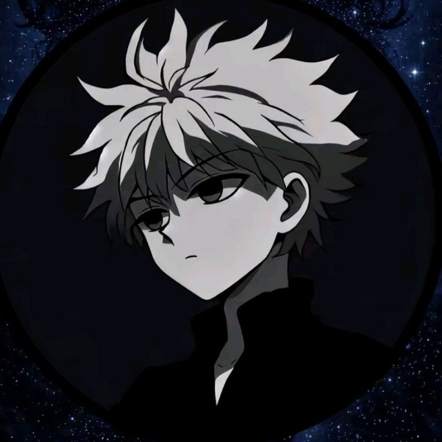
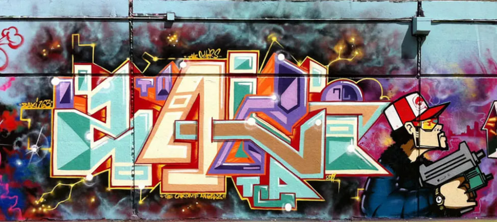
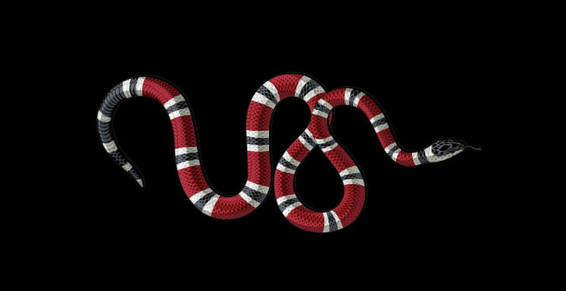

I am a creative developer who builds clean, functional, and interactive web experiences. Welcome to my personal space on the web.
I am an ambitious Information Science student with a deep passion for clean architecture, software engineering, and system development. Recognized as an outstanding student for my technical focus and analytical approach, I thrive at the intersection of data management and modern web engineering.
My coding journey is fueled by a curiosity to transform unorganized datasets into high-performance, interactive user experiences. When I am not optimizing algorithms or debugging JavaScript, I focus on mastering information retrieval models, database tuning, and frontend technologies to build products that solve real-world problems.

An interactive web application featuring a highly responsive HTML5 Canvas drawing board. Users can create digital sketch art, post their creations to a global public community board, rate other users' work with a live upvoting metric system, and instantly share drawings via unique web links.
HTML5 Canvas / Vanilla JS / Node.js / MongoDB
A retro-styled arcade game built entirely from scratch to practice core algorithmic logic. Features localized grid collision algorithms, an incremental speed difficulty curve system, high-score memory storage tracking across browser cache refreshes, and dynamic fluid snake segment rendering.
JavaScript (ES6) / CSS Flexbox / LocalStorage API